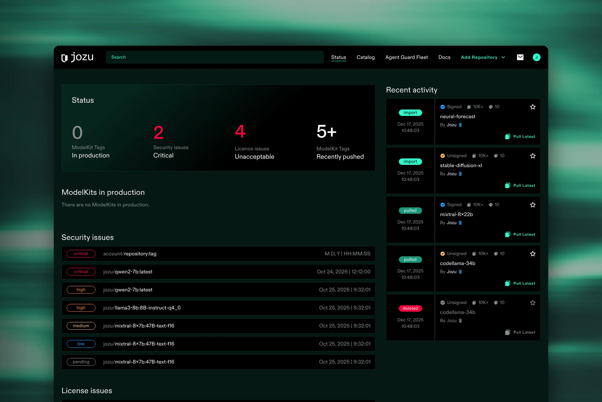

case study / product design
Jozu Hub: designing AI supply chain security from 0 to 1
Jozu Hub is where teams store, scan, and govern the AI models and agents they ship to production. As founding designer I took it from a blank Figma file to a live platform: the UX process, a documented design system, and every core screen and flow.

A registry that knows what is safe to ship
Teams now ship models, datasets, prompts, agent skills, and MCP servers the way they ship code. Jozu Hub is the private registry for all of it. Every artifact is packaged as a versioned, signed ModelKit, scanned for security threats and license problems, and governed by policies before it ever reaches production.
The audience is technical and busy: ML engineers who push models, platform teams who run the infrastructure, and security and compliance people who have to say yes or no. They all need the same answer fast, from different angles.
The Status page is that answer on one screen. Four numbers tell you whether anything risky is heading to production, followed by open security and license issues ranked by severity and a feed of what the team just pushed or pulled.
How do you make AI supply chain security readable at a glance for engineers, and defensible in detail for compliance?
Building from 0 to 1
There was no product to redesign and no design team to inherit from. I joined Jozu in 2023 as its first designer, so the process had to be rigorous enough to trust and light enough for a startup that ships every week.
I ran a classic UX cycle tuned for speed, so every step ended in something we could build or test fast.
Discover: how ML teams actually work
Before designing anything, I mapped how a model gets from a notebook to production today: data engineering, model selection, experimentation, and deployment, for solo and team setups. That map showed where Jozu could start. Alongside it, a competitor analysis of leading MLOps tools showed how they present themselves and where the gaps were.


Define: three people, one approval
Research turned into three personas. Their goals pull in different directions, and the product has to serve all of them in the same moment: when a model needs approval to ship.
Sarah
Has to make sure only vetted models reach production, with a complete audit trail. Today approvals arrive by Slack and email with almost no context.
David
Wants to ship model updates within a day of training. Deployments fail with "approval required" and no hint of who to ask or how long it takes.
Marcus
Responds to incidents within minutes. Cannot tell which models a new CVE affects, or block a vulnerable model instantly.

AI drafts, I decide
I used AI as a fast collaborator at the points where speed matters most, and kept every product decision with people.
- Synthesis. Clustering interview notes and feedback into themes, which I then checked against the raw notes.
- Edge cases. Asking for everything that can go wrong in a flow: a scanner that fails, a missing permission, an expired approval. Many of those became real error and empty states.
- Documentation. Turning my rough notes into first drafts of component descriptions and usage rules, then editing them for accuracy.
- Prototyping in code. Building working prototypes with Claude Code to test interactions with real data, and to talk to engineers in their own medium.
Working with AI also changed how I write the design system. More on that below.
One system for designers, engineers, and AI
A product with this many tables, statuses, and severity levels falls apart without a system. I set up the Jozu Hub design system in Figma and built it together with engineering, so every component in the file matches a component in code.
The front end is built with Tailwind CSS, an open-source, utility-first CSS framework. Keeping names and scales in Figma close to Tailwind's made handoff simple: engineers could read a design and know which utilities to use.
How to start: atomic design
I started with an audit of what already existed in the product and the codebase, then built from the smallest pieces up. Working closely with engineers meant names, props, and states matched on both sides from day one.
Color tokens, typography, spacing, radius, elevation. The layer every other decision depends on.
The ones used most, first: buttons, inputs, checkboxes, radio buttons, tags. Each with every state: default, hover, focus, disabled.
Cards, tables, filters, dialogs, empty states. Built only from the components above.
Status, Catalog, Repository, Organization. Assembled from patterns, never drawn from scratch.


Semantic tokens instead of raw values
Raw colors live in the palette. Everything in the UI points to a mapped token that says what the color is for: text, icon, surface, and border, each with its own set.
text/actionTurquoise/500Links and primary actionstext/action-hoverTurquoise/600The same action, on hovertext/action-dangerRed/500Destructive actions onlysurface/cards-defaultGray/BlackCard backgroundsborder/focusTurquoise/500Keyboard focus ringtext/actionTurquoise/500 #2CFECCA raw value only says what a color looks like, while a semantic token says what it is for, so a designer, an engineer, or an AI agent picks the right one without guessing. When the palette changes, we update one mapping instead of hunting through hundreds of components and screens.

How to document: write it down, or it does not exist
Clear naming conventions, a description on every semantic token, and usage rules on every component, with do and don't examples.
Primary button
- Use one primary button per view, for the main action.
- Start the label with a verb: Pull tag, Request approval.
- Pair with a secondary button for the alternative.
Primary danger button
- Don't use it for anything that can be undone.
- Don't place it without a confirmation dialog.
- Don't use red for emphasis. Red means destructive.
AI can now generate screens and front-end code from a design system, but it only knows what is written down. A human designer looks at a button and intuits that the red one is for deleting things. AI can't.
That makes documentation a product feature, not a chore. Token descriptions, component descriptions, and usage rules are what let an engineer, a new designer, or an AI agent build a screen that looks and behaves like Jozu Hub without a designer in the loop.
Example: the repository card
The card is the most reused pattern in Jozu Hub. It packs trust signals (signed, downloads, tags), the repository name and owner, and a summary of what is inside the latest ModelKit, with a one-click Pull Latest. Every state is designed and documented.


Jozu Hub, part by part
The system at full scale. Each area answers one question for one kind of user. The full set of screens is in the image gallery, and the end-to-end journeys are on the flows page.
Sign up and onboarding: value before the login wall
New visitors can browse public models before creating an account. Short tooltips point out the key actions, like importing a model from Hugging Face, and only ask you to log in when you try one. Sign up works with Google or email, and ends on a welcome message and a getting started guide.
See the sign up and log in flows
Catalog: find a model you can trust
Browse every repository you have access to. Filters for ModelKit contents, license status, visibility, signing, organization, and role sit in a drawer, so the cards keep the full width until you need them. Active filters show as removable chips, and an empty result always offers a way back.
Try the catalog filters


Repository: everything about one model
The repository page is the heart of the product. A tag picker, a copyable pull command, and a summary of the ModelKit contents sit on top. Tabs below cover the model card, contents, deploy instructions, security report, ModelKit diff, and the tag timeline.
Try the repository page
ModelKit diff: what changed between versions
Before you promote a new version, you need to know exactly what is different. The split diff compares layers, files, digests, sizes, and annotations side by side, with removals in red and additions in green, and it collapses to a single column on mobile.
Try the diff view
Security scan report: from score to source
Every ModelKit is scanned for threats like supply chain attacks, prompt injection, and backdoors. The donut chart doubles as a filter: click a severity to narrow the list, then expand a finding to see the affected file and why it was flagged. Failing scanners say so, instead of silently showing a clean report.
Open the security scanner prototype
Organizations: who can do what
Teams group repositories and people into organizations with clear roles: Owner, Admin, Developer, and Guest. Admins manage members and roles in place, and an organization timeline keeps an exportable audit log of every push and pull.


Beyond the registry
The same system stretched to new surfaces: a fleet view for Jozu Agent Guard, the runtime that enforces policies where agents run; a message center for imports and scan results; and the Jozu docs. The Fleet View has its own case study, a deep dive into turning a stream of agent activity into clear signals.
Read the Fleet View case study


Responsive by design
Engineers check a scan result from their phone as often as from their desk. Breakpoints are designed per page, not left to chance.


From a blank file to a platform in use
users of the product I designed
tasks executed by those users
first designer, from first sketch to live platform
design system the team still builds on
See all the work
Every screen and every flow, in one place.